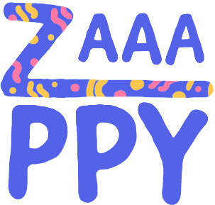

- Generated by
 1.8.17
1.8.17
|
Zaaaaaaappppy
A tribute to Zaphod Beeblebrox
|

The Zappy project consists of the realization of a simulation of a "Spore Like".
Composed of three parts, namely the server, developed in C, the GUI, developed in C++/SFML and the ClientIA, developed in C/Python.
This project is an EPITECH Project. If you are an EPITECH student, move out the way! Nothing to see here... The groups don't want to be involved to your -42.
If you're not, no worries! You're welcome here!
To use this project, you'll need Cmake 3.17.0 Compiler, SFML-devel library, python 3.0 and C11.
Zappy is developed with C. EPITECH impose the Epitech Coding Style. Check it right here.
Feel free to read the CONTRIBUTING.md
Do not hesitate to contact me for any questions or remarks.
1.8.17